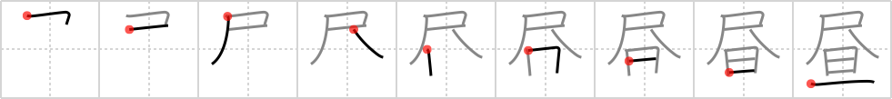

昼
← →
daytime

Reading:
On-Yomi: チュウ — Kun-Yomi: ひる
Heisig story:
Shakuhachi . . . nightbreak.
Koohii stories:
1) [samuize] 27-7-2007(224): Roosters in Japan are very civilised, they play the shakuhachi at nightbreak to signify the beginning of daytime.
2) [esaulgd] 10-9-2007(108): In a Zelda game, you can warp to the daytime if you play your shakuhachi to bring about nightbreak… or your ocarina if you don't have a shakuhachi.
3) [GoodSirJava] 8-1-2007(88): A daytime blowjob? Can't you at least wait until nightbreak?
4) [AndamanIslander] 5-5-2008(43): Fun fantasy: to get a blowjob starting at nightbreak and lasting all through the daytime.
5) [radical_tyro] 19-6-2007(17): I wish I could get a shakuhachi all during the daytime right up until nightbreak.